Traditional Hanbok for male

Kpop

Korean traditional board game

Korean Cuisine
.jpg)
Ganggang Sullae
Korea’s heritage features a remarkable uniqueness in its history, art, music, and lifestyle as it is a rich combination of culture and modernization. Although it is deeply engrained in the Confucian notion of respect for the elderly and families, it still welcomes the outside world.
The hanbok is the recognized clothing of Korea that is appreciated for its beauty and stylized shapes. It consists of a bright, draped jacket (jeogori) along with a blouse (chima) worn high on the waist for females, and pants (baji) for males. Hanbok is still worn during festivities, marriages and important holidays like Chuseok (Harvest Festival) and Seollal also known as Lunar New Year. The colors and motifs of the clothes serve to define the social class or the relation of the owner of a garment.


Also known as Korea's musical child, K-pop is one of the greatest cultural exports the country can offer. It features energetic dances, easy-to-remember songs and spectacular videoclip production. Such outstanding groups like TWICE, ILLIT and LE SSERARIM brought K-pop onto the world stage and expanded the possibilities of such genres as hip-hop, EDM, R&B. K-pop followers worldwide who self-identify as fans, also participate in the waving of light sticks at concerts and items popular on social networking sites

 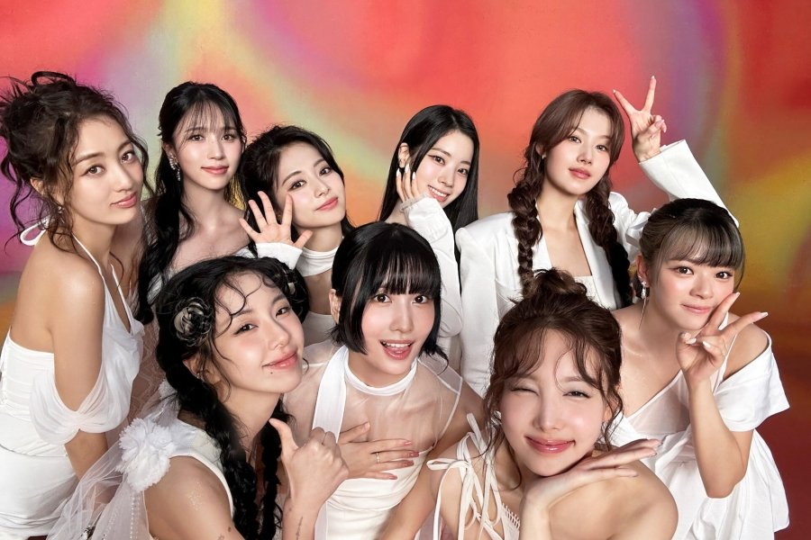
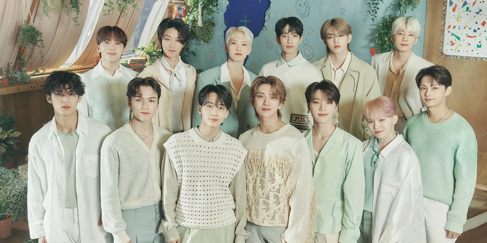
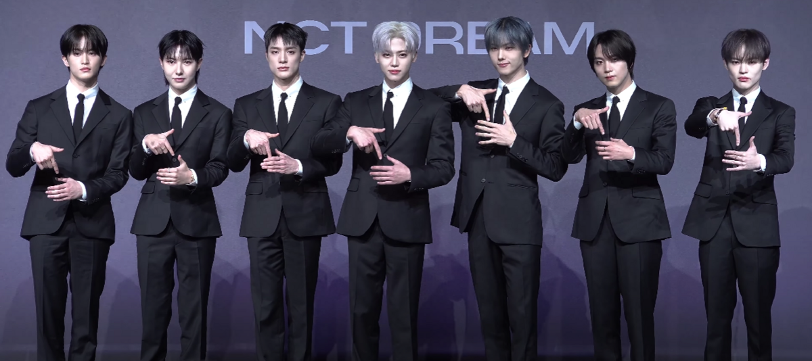
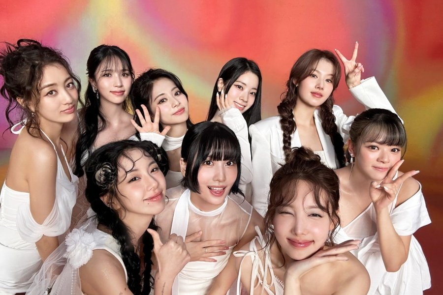
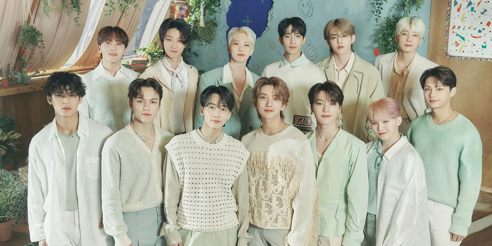
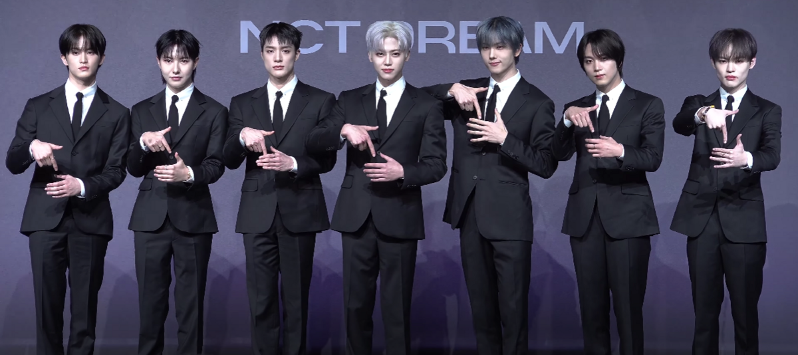

Games from Korea’s history capture the communal aspect and creativity of its people. One of them is considered the most recognizable, Yutnori, which is centered on four thin wooden sticks. Another one is Jegichagi, almost a Korean hacky sack game, in which a jegie is kicked up and caught without it hitting the ground. During holidays, one can also notice other games and activities such as Tuho (throwing of sticks into any narrow holes) or Yeon Nalligi which is kite flying during winter seasons.
.jpg)
Rice, vegetables, and meat are the main ingredients of Korean cuisine, which is a tasty and nourishing culinary tradition that is served with a variety of banchan (side dishes) including kimchi. Important foods include bibimbap (mixed rice bowl), tteokbokki (spicy rice cakes), Korean BBQ, bulgogi (marinated meat), and filling soups such kimchi jjigae. Confucian principles of harmony and respect are reflected in meals, which place an emphasis on sharing and community. For taste and health advantages, fermented foods like kimchi, gochujang (red chili paste), and doenjang (soybean paste) are essential. With meals that vary according to the season, Korean cuisine honors seasonality and highlights local delicacies like Busan seafood and Jeonju bibimbap. With reasonably priced staples like gimbap (seaweed rice rolls) and hotteok (sweet pancakes), street food culture is lively. Lunar New Year celebrations include festive foods like tteokguk (rice cake soup) and
 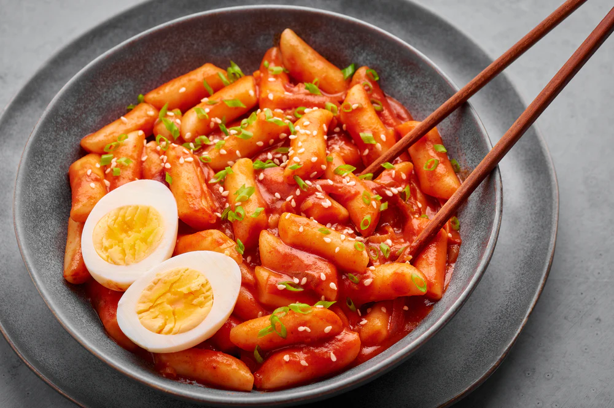
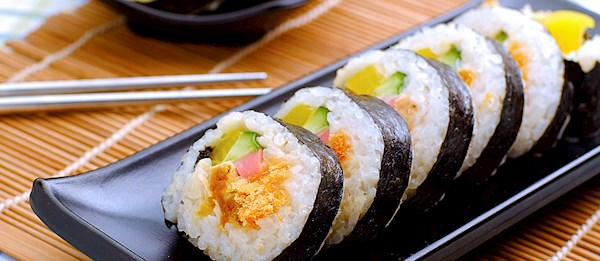
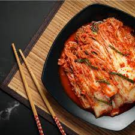
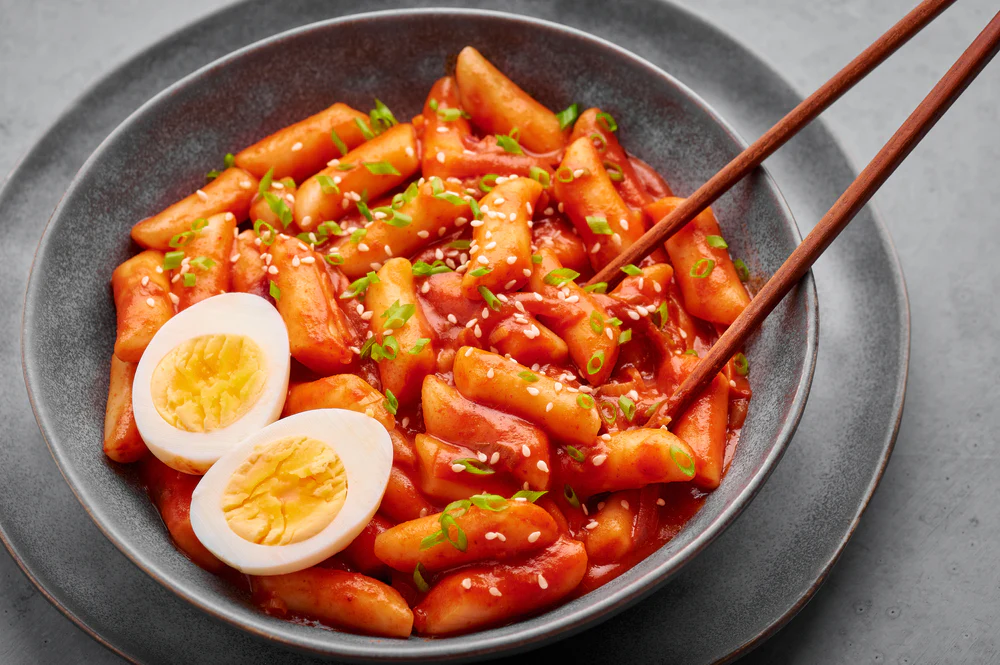
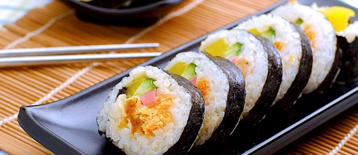
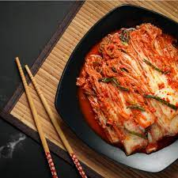
That’s a great move! Asking to call shows that you’re interested in spending time with her, even if it’s just through conversation. It’s a nice way to connect more deeply, especially when working on assignments or staying up late. How did she respond to your request? Did she seem open to the idea? If she agrees to call, you can use the opportunity to keep the vibe light and fun while also supporting each other with work. If she’s hesitant, don’t take it personally it could be due to being tired, distracted, or just needing some space.